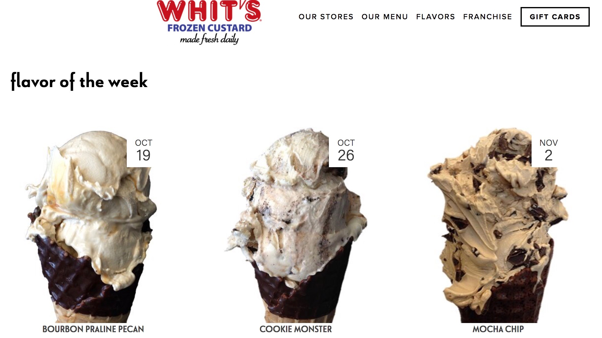
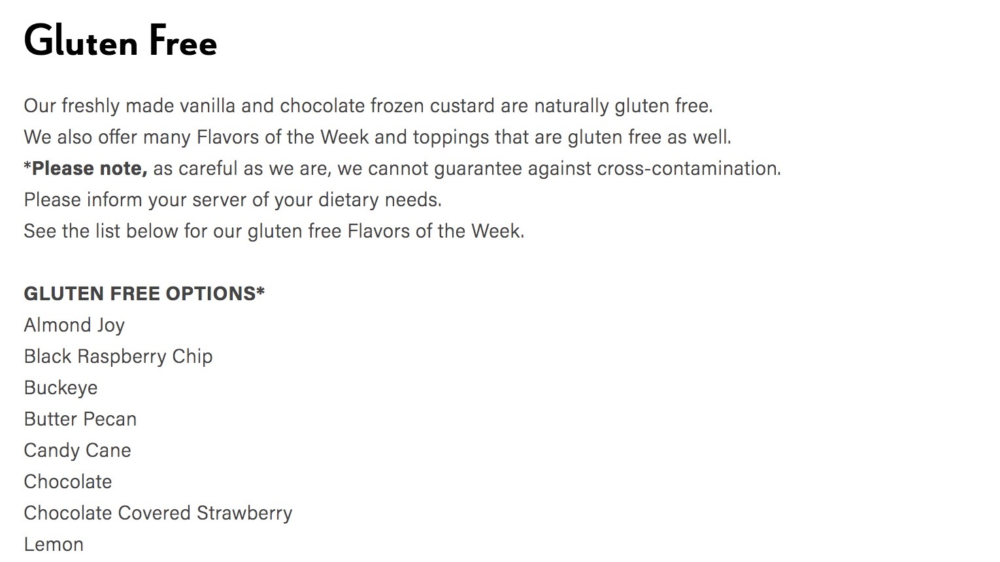
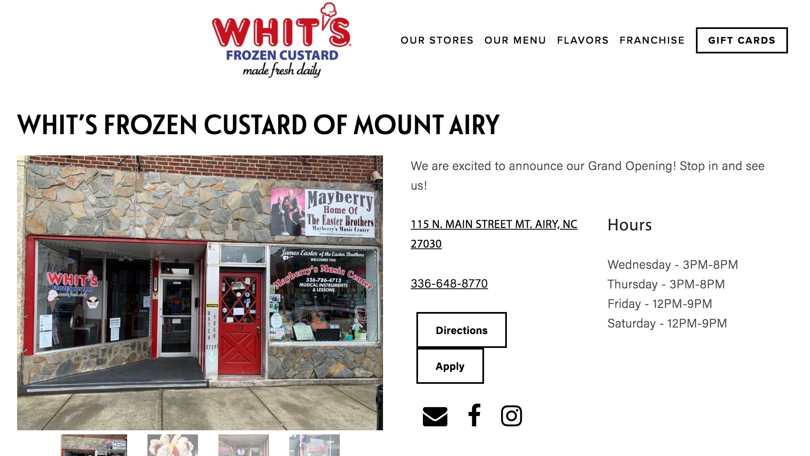
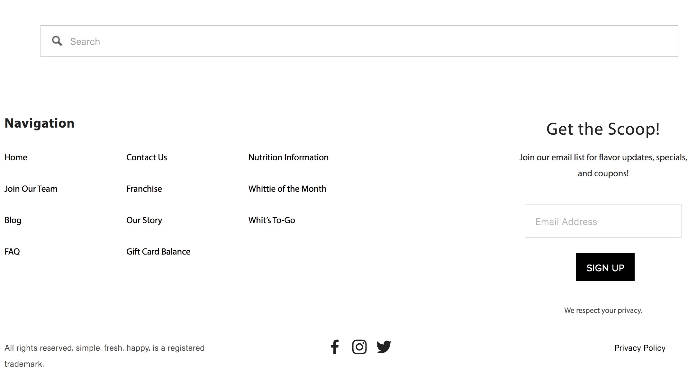

This project is designed to help determine Whit's Frozen Custard's usability on their website. Below are the results of the test.
Conclusion
Whit's Custard has a very clean and easily navigable site for anyone to stay engaged and easily order!
01
Finding Flavors of the Week
Thatcher was confidently able to use previous website knowledge to quickly determine where on the home screen the drop-down menu was.
Time: 0:12

02
Gluten Free Options
Based on studying down from task 1, Thatcher was able to use context clues in finding the Gluten Free options quickly.
Time: 0:09

03
Whit's Custard To-Go
The To-Go option is a quick scroll down to the bottom of the page, however Thatcher was quickly able to find a shortcut on the page he was viewing, allowing him to find it quicker.
Time: 0:30
04
Mt. Airy Whit's
Thatcher was unsure and frustrated of where to go for this task, as he wasn't sure if this type of drop down would be on the home page. He eventually found it after searching the whole website!
Time: 1:30

05
Whit's Twitter Handle
This was one of the quicker and more confident finds due to his past experiences with wanting to find social media handles on websites.
Time: 0:11

Conducted by Sydney McKenna, Hope Carpenter, Thatcher Craig